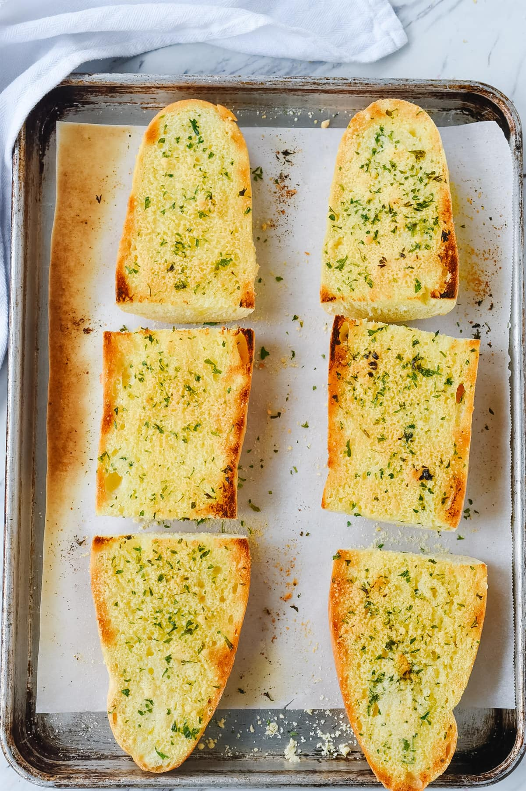

Garlic bread

Description
Garlic bread is a simple dish that can be eaten as a snack or partnered with other dishes. Anyone can prepare garlic bread with readily available ingredients in their pantry.
Ingredients
- 113g butter, softened
- 3 cloves of garlic, minced
- 8 pieces of bread
- fresh parsley
Instructions
- Preheat oven to 325 Fahrenheit
- Prepare all ingredients
- Mix garlic and softened butter in a small bowl
- Spread garlic butter on each piece of bread
- Put the bread pieces inside oven. Bake for 10-15 mins
- Put parsley on the baked bread. Enjoy.